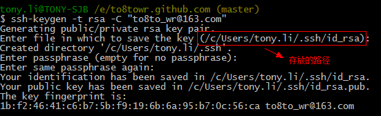
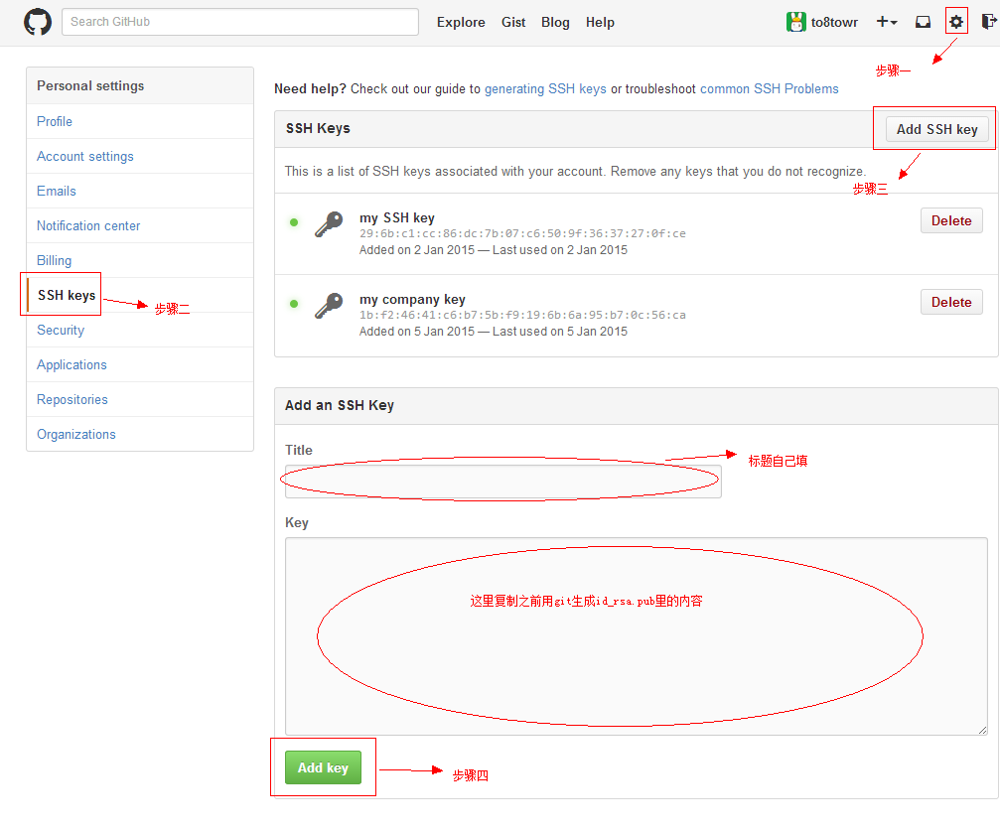

远程仓库
前面我们了解了git的基本操作，接下来，我们学习如何利用git与远程联系，并做相关操作。
Git是分布式版本控制系统，同一个Git仓库，可以分布到不同的机器上。怎么分布呢？最早，肯定只有一台机器有一个原始版本库，此后，别的机器可以“克隆”这个原始版本库，而且每台机器的版本库其实都是一样的，并没有主次之分。
你肯定会想，至少需要两台机器才能玩远程库不是？但是我只有一台电脑，怎么玩？
其实一台电脑上也是可以克隆多个版本库的，只要不在同一个目录下。不过，现实生活中是不会有人这么傻的在一台电脑上搞几个远程库玩，因为一台电脑上搞几个远程库完全没有意义，而且硬盘挂了会导致所有库都挂掉，所以我也不告诉你在一台电脑上怎么克隆多个仓库。
实际情况往往是这样，找一台电脑充当服务器的角色，每天24小时开机，其他每个人都从这个“服务器”仓库克隆一份到自己的电脑上，并且各自把各自的提交推送到服务器仓库里，也从服务器仓库中拉取别人的提交。
完全可以自己搭建一台运行Git的服务器，不过现阶段，为了学Git先搭个服务器绝对是小题大作。
好在这个世界上有个叫GitHub的神奇的网站，从名字就可以看出，这个网站就是提供Git仓库托管服务的，所以，只要注册一个GitHub账号，就可以免费获得Git远程仓库。
在继续阅读后续内容前，请自行注册GitHub账号。由于你的本地Git仓库和GitHub仓库之间的传输是通过SSH加密的，所以，需要一点设置：
第1步：创建SSH Key。在用户主目录下，看看有没有.ssh目录，如果有，再看看这个目录下有没有id_rsa和id_rsa.pub这两个文件，如果已经有了，可直接跳到下一步。如果没有，打开Shell（Windows下打开Git Bash），创建SSH Key：
$ ssh-keygen -t rsa -C “youremail@xxx.com”
你需要把邮件地址换成你自己的邮件地址，然后一路回车，使用默认值即可
如果一切顺利，你就会在你的主目录看到多了一个.ssh文件夹，里面有id_rsa和id_rsa.pub两个文件
第2步，打开github网站并登录，点击右上角的设置，然后在左边栏点击SSH keys，最后进入下面的界面：
图片说的很明白了吧，就不再用文字说明了。
在网站上添加完SSH key之后，你的git就与当前帐号的github绑定了
为什么GitHub需要SSH Key呢？因为GitHub需要识别出你推送的提交确实是你推送的，而不是别人冒充的，而Git支持SSH协议，所以，GitHub只要知道了你的公钥，就可以确认只有你自己才能推送。
当然，GitHub允许你添加多个Key。假定你有若干电脑，你一会儿在公司提交，一会儿在家里提交，只要把每台电脑的Key都添加到GitHub，就可以在每台电脑上往GitHub推送了。
小结：
SSH key就相当于git进入github的帐号密码，一台电脑，一个github帐号对应一个SSH key。如果换了电脑，就需要重新用git生成SSH key，再添加到对应的github账号上。